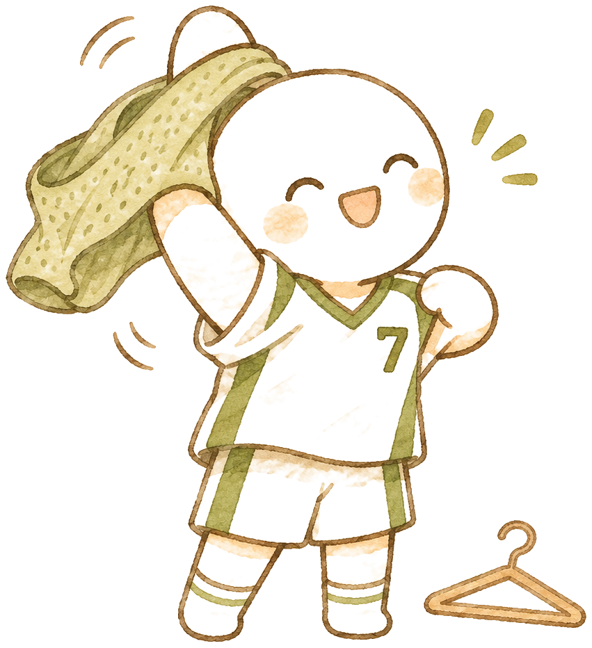
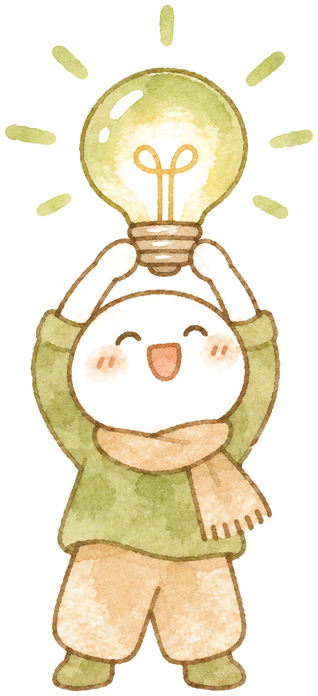

執行下列程式，輸出會是什麼？
| 程式 | 白話 |
|---|---|
| 把 PyTorch 工具箱拿進來 |
| 把骰子的起點固定，整段程式重跑一次會得到同一串隨機結果 |
| 做一個 Dropout 開關，練習時每顆燈各有一半機率被關掉 |
| 準備 1000 顆燈，每顆亮度都是 1 |
| 告訴 Dropout：現在是比賽，不要關燈 |
| 把燈送進 Dropout，檢查「每一顆」出來是不是跟進去時一模一樣，印出 True／False |
正解：A
比賽模式下 Dropout 什麼都不做，1000 顆燈進去是 1、出來還是 1 → 每一顆都一樣 → True。
train／eval 模式：Dropout 與 Batch Normalization｜iPAS AI 應用規劃師中級 科目三
執行下列程式，輸出會是什麼？
| 程式 | 白話 |
|---|---|
| 把 PyTorch 工具箱拿進來 |
| 把骰子的起點固定，整段程式重跑一次會得到同一串隨機結果 |
| 做一個 Dropout 開關，練習時每顆燈各有一半機率被關掉 |
| 準備 1000 顆燈，每顆亮度都是 1 |
| 告訴 Dropout：現在是比賽，不要關燈 |
| 把燈送進 Dropout，檢查「每一顆」出來是不是跟進去時一模一樣，印出 True／False |
正解：A
比賽模式下 Dropout 什麼都不做，1000 顆燈進去是 1、出來還是 1 → 每一顆都一樣 → True。
比賽模式 eval()
總亮度 8
練習：隨機關掉一半的燈（變 0）；還亮的燈 ＝ 原本的值 × 1/(1−p)，這題 p = 0.5，所以 1 × 1/(1−0.5) ＝ 2，整排總亮度才跟原本一樣（8）
比賽：全部的燈原樣亮著——練習是「輪流上場練默契」，比賽是「全員上場拿成績」
哪幾顆被關掉是隨機的，幾乎每次都不一樣
練習 model.train() | 比賽 model.eval() | |
|---|---|---|
| Dropout | 隨機關掉一半的燈（變 0），還亮的調成兩倍 | 全部的燈原樣亮著，原樣輸出（指引說法：不再丟棄神經元） |
| 批次正規化 （Batch Normalization） | 用這一批資料的平均與變異數來校正，並累積成長期的平均與變異數 | 用練習時累積的長期平均與變異數來校正 |
| 同一張圖預測兩次 | 結果可能不一樣 | 每次都一樣（其他條件固定時） |

| 程式 | 白話 |
|---|---|
| 告訴 Dropout：現在是比賽，不要關燈 |
| 把燈送進 Dropout，檢查「每一顆」出來是不是跟進去時一模一樣，印出 True／False |

變成練習模式，每顆燈出來不是 0 就是 2，沒有任何一顆會剛好是 1，所以「每一顆都一樣」一定不成立 → 一定是 False（不是「有機會」False）。
練習 train() 隨機關燈，比賽 eval() 全亮
練習時每顆燈不是 0 就是 2，比賽才跟原本一模一樣
同一張圖結果會變，先看有沒有忘了 eval()
附圖程式碼實現的是哪一種技術？
| 程式 | 白話 |
|---|---|
| 這一層收到一批資料 x，還要知道現在是不是練習 |
| 如果是練習 |
| 算「這一批」的平均和變異數 |
| 把這一批的平均摻一點進這一層保存的長期平均（累積） |
| 變異數也一樣累積 |
| 如果是比賽 |
| 直接用練習時累積的長期平均與變異數 |
| 把資料減平均、除以標準差，標準化後送出 |
正解：B
練習用這一批、比賽用長期累積——這就是 Batch Normalization 的練習模式和比賽模式；Dropout 的分支會出現隨機關燈，不會有平均和變異數。
某工程師在每一輪訓練後都先呼叫 model.eval() 再跑驗證，但驗證結束後沒有呼叫 model.train() 就直接進入下一輪訓練。模型含 Dropout 與 Batch Normalization 層。下列敘述何者最正確？
正解：C
eval() 只切模式不關梯度，梯度照算、參數照改，但 Dropout 不關燈了、BatchNorm 也不累積了，這兩種防過擬合的效果在後面幾輪都沒了。(A) 優化器不管模式；(B) eval 不擋梯度；(D) 參數照樣更新。
執行下列程式，輸出會是什麼？
| 程式 | 白話 |
|---|---|
| 把 NumPy 工具箱拿進來 |
| 準備三個數：-2、0、3 |
| 每個數都跟 0 比、留大的那個（負的變 0、正的原樣），印成清單 |
正解：A
這就是 ReLU：max(0, x)，負數變 0、正數原樣、0 還是 0 → [0.0, 0.0, 3.0]。(D) 把 -2 變 2 是絕對值，不是 ReLU；(B) 等於沒處理；(C) 多乘了一次。分辨：np.maximum(0, x) 放兩樣、每格跟 0 比；np.max(x) 放一樣、整排挑一個最大值。